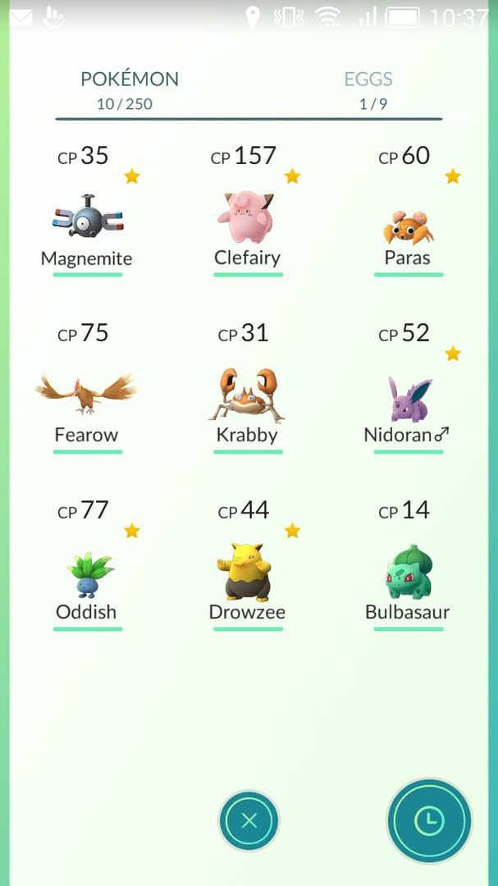
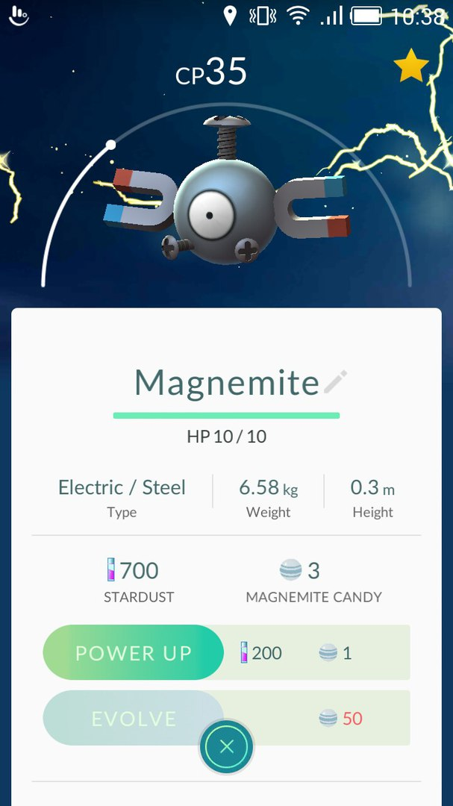

Прокачака покемонів
 Практично у кожного покемона є дві або навіть три еволюційні форми . Ви можете зловити як вже еволюціонував покемона , так і монстра на базовій стадії розвитку . У кожного з покемонів ( в рамках 1-2-3 стадій еволюції ) є свій спеціальний ресурс - цукерки ( candy ) . За упіймання покемона ви отримуєте 1-10 цукерок його виду ( в основному близько 2-3 штук ) , які згодом можете витратити на такі цілі : посилення покемона такого виду або його еволюцію . Крім того , в грі є механіка трансферу . Ви по суті продаєте непотрібного покемона за одну цукерку . Саме тому вище ми радили по можливості збирати сміттєвих покемонів , тому що ви можете тут же відправити їх додому за одну цукерку їх виду . Щоб зробити трансфер , виберете непотрібного покемона , скролльте вниз і натискайте на кнопку Transfer , яка розташовується після карти , де ви спіймали покемона .
На перших порах намагайтеся не витрачати цукерки на посилення покемонів (хоча б до 10 рівня вже точно), так як на збільшення CP і інших параметрів витрачається не тільки цукерка, а й 600 зоряного пилу (вона теж видобувається при затриманні покемонів, приблизно 100-300 штук за одну упіймання). Зате на еволюцію можете ці цукерки спускати легко, тому як з неї ви отримуєте виключно позитивні результати: 500 XP для вашого персонажа, а також посилення вже наявного покемона (намагайтеся еволюціонувати більш менш сильних особин, навіть якщо це сміттєвий вигляд ніби щурів або черв'яків).